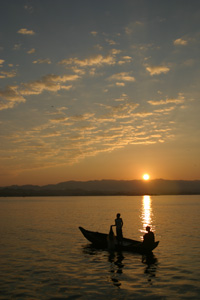

Bangladesh has been aptly described as a new state in an ancient land. Much has been written about the past glory of Bangladesh, notably in old records like the evidence of Pliny and Periplus of the Erythrean Sea (first century AD). It was drawn in Ptolemy's map. These indicate that from the earliest times Bangladesh was known to the West, particularly for its Muslin, the finest fabric the world has ever produced. Travellers and scholars who were attracted by the charms and fame of Bangladesh since time immemorial had showered effusive epithets on its bounties and wealth, affluence and prosperity, craftsmanship and cultural advancement.
Etymologically, the word Bangladesh is derived from the cognate Vanga which was first mentioned in Aitarey Aranyaka, a Hindu scripture composed between 500 BC and 500 AD. Literally it means a wetland. Muslim merchants of Arab origin used to refer it as Bangalah from which its present nomenclature is believed to have gradually evolved. Geological evidence indicates that much of Bangladesh was formed 1 to 6.5 million years ago during the tertiary era. Human habitation in this region, therefore, is likely to be very old with the evidence of Palaeolithic civilization dating back to about 1,00,000 years.
Facebook Twitter Github Contact